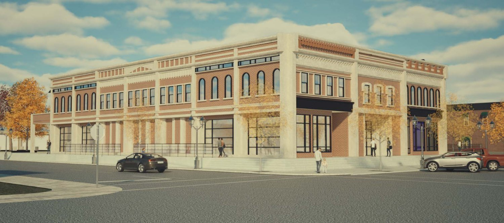
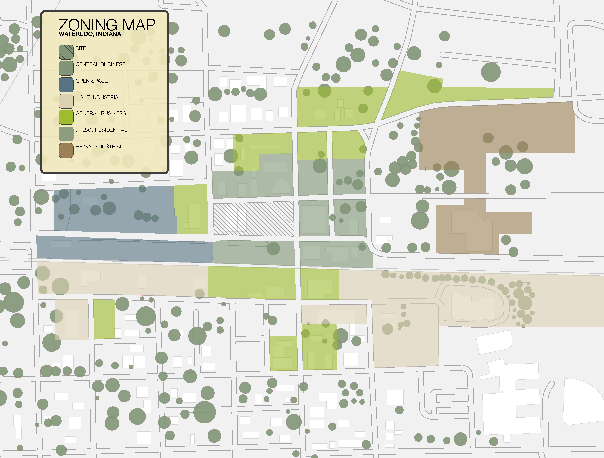
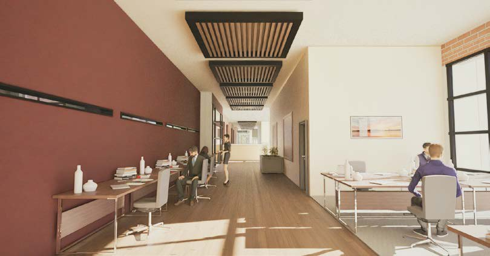

Architecture
Downtown Revitalization · Waterloo, IN
Rural Revival

Role
Research · Programming · DesignScope
Mixed-use block · ~30,470 sfTools
Rhino 8 · Twinmotion · InDesignA research based plan and design to bring the pieces of a working downtown back to Waterloo, Indiana.
The project uses one vacant lot to add a multiuse space to help bring more daily activity back to Main Street.
01Problem
In the last half century, Waterloo lost much of the retail, housing, and community space that helped keep it active. Local spending left the county, and more residents have fewer places nearby to work or meet.
02Solution
The design brings a food hall, bodega, live work spaces, gym, public plaza, and second floor apartments together on one block. It fits into the surrounding two story brick buildings while adding density to the center of town, the key factor in growing a downtown.
03Research




Process
Through multiple iterations, I found that giving the storefront the classic Indiana look would help residents not feel overwhelmed with a type of building that is foreign to rural America. The back of the building was influenced by a French quarter style balcony that connects multiple floors of programming to the shared courtyard space.
04Product



05Flythrough